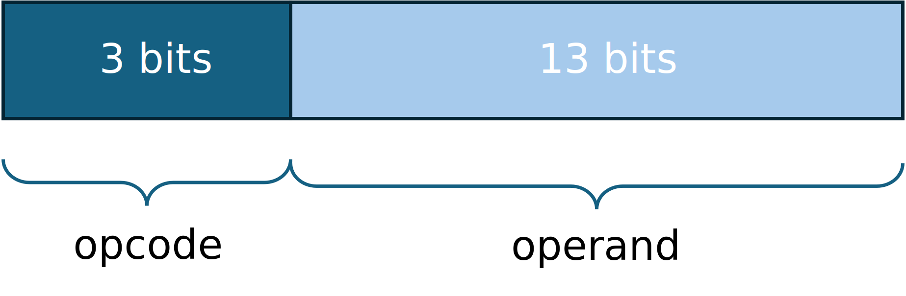

Computer Architecture
and Software Execution Process
Microprocessor architecture
Bachelor in Artificial Intelligence, Data and Management Sciences
CentraleSupelec and ESSEC Business School - 2024/2025
CentraleSupelec and ESSEC Business School - 2024/2025

The computer components

The computer components
-
What can a computer (processor) do?
- copy values between storage units
- perform logical/arithmetic operations between stored values
- move within the program, possibly conditionally
-
A processor executes a very low level language (Machine Language)
- the instructions of this kind of language execute elementary operations.
- machine instructions control electronic/logic circuits.
Typical Structure of CPU
Typical Structure of CPU
Memory Unit
-
Computer memory stores information, such as data and programs,
for immediate use in the computer. -
The term memory is often synonymous with the terms RAM, main memory,
or primary storage.

Typical Structure of CPU
arithmetic and logic unit (ALU)
- The Arithmetic and Logic Unit (ALU) is a combinational digital circuit that performs arithmetic and bitwise operations on integer binary numbers.
-
The opcode input conveys to the ALU an operation selection code
that specifies the desired arithmetic or logic operation to be performed by the ALU.
add ,sub ,and ,or , ...- generally, an ALU opcode is not the same as a machine language instruction
Typical Structure of CPU
Register Section
- A processor register is a quickly accessible memory available to a computer's processor.
-
Registers are measured by the number of bits they can hold
- for example, an 8-bit register, 16-bit register, or more.
-
A processor often contains several kinds of registers:
- Accumulator $\to$ stores intermediate arithmetic and logic unit results.
- Program Counter $\to$ indicates where a processor is in its program sequence.
- Istruction Register $\to$ holds the instruction currently being executed or decoded
(each instruction to be executed is loaded into the IR register) - Memory Address Register $\to$ either stores the memory address
from which data
will be fetched or the address to which data will be sent and stored.
Machine language
(Instructions)
- Machine language is built up from instructions.
- Instruction $\to$ an elementary operation that a processor can perform.
-
A given instruction may specify:
- opcode $\to$ the instruction to be performed
- any explicit operands $\to$ registers, constant values, addressing modes used to access memory
-
Example:
LOAD addr $\to$ Acc := Mem[addr]LOAD val $\to$ Acc := valSTORE addr $\to$ Mem[addr] := AccADD addr $\to$ Acc := Acc + Mem[addr]ADD val $\to$ Acc := Acc + valSUB addr $\to$ Acc := Acc - Mem[addr]SUB val $\to$ Acc := Acc - val

Examples
-
OPCODE OPERAND
$xxx ~~ xxxxxxxxxxxxx$ -
LOAD 25 $\to$ Acc := Mem[25]
$000 ~~ 0000000011001 = (0019)_{16}$ -
LOAD 12 $\to$ Acc := 12
$100 ~~ 0000000001100 = (800C)_{16}$ -
STORE 54 $\to$ Mem[54] := Acc
$001 ~~ 0000000110110 = (2036)_{16}$
-
ADD 41 $\to$ Acc := Acc + Mem[41]
$010 ~~ 0000000101001 = (4029)_{16}$ -
ADD 10 $\to$ Acc := Acc + 10
$110 ~~ 0000000001010 = (C00A)_{16}$ -
SUB 14 $\to$ Acc := Acc - Mem[14]
$011 ~~ 0000000001110 = (600E)_{16}$ -
SUB 112 $\to$ Acc := Acc - 112
$111 ~~ 0000001110000 = (E070)_{16}$
Examples
Program execution
- A program's instructions are stored at contiguous addresses
- The processor reads the program instructions from memory one by one.
-
The address of the next instruction to be read is stored
in the Program Counter (PC) register.
Program execution
-
Fetch $\to$ the instruction contained at the address
indicated by the PC register is copied into the Instruction Register (IR)
- The value contained in the PC register is incremented.
-
Decode $\to$ the processor "understands" the instruction
to be executed. - Execute $\to$ The instruction is executed by the processor.
Implementing the control unit
-
Creating a Time Table
- One line for each instruction
- One column for each clock time
- For each time, the data path signals to be activated
-
Derivation of a set of logical equations
- An equation for each signal in the data path
- An equation indicates when a signal should be activated
- An equation depends on the control unit inputs and the T, P signals
- $T_i$ $\to$ setup time
- $P_i$ $\to$ memorization time
Data path
| CALU= | 00 (ALU$_o$ = ALU$_1$), | 01 (ALU$_o$ = ALU$_1$ + ALU$_2$), | 10 (ALU$_o$ = ALU$_1$ + 1), | 11 (ALU$_o$ = ALU$_1$ - ALU$_2$) |
|---|---|---|---|---|
| R/W= | 0 (READ), | 1 (WRITE) |
Time Table - Fetch
| time 1 (PC $\to$ RAM) | time 2 (RAM $\to$ IR) | time 3 (PC+1 $\to$ PC) | |
|---|---|---|---|
| PC $\to$ ALU$_1$, ALU$_O$ $\to$ MAR s5=1, CALU=00 ($T_1$) MARC=1 ($P_1$) |
RAM $\to$ ALU$_1$, ALU$_O$ $\to$ IR s1=1, CALU=00 ($T_2$) IRC=1 ($P_2$) |
PC $\to$ ALU$_1$, ALU$_O$ $\to$ PC s5=1, CALU=10 ($T_3$) PCC=1 ($P_3$) |
The fetch steps are the same for all instructions.
Time Table - LOAD addr /value
| time 4 (IR $\to$ RAM) | time 5 (RAM $\to$ ACC) | |
|---|---|---|
| IR $\to$ ALU$_1$, ALU$_O$ $\to$ MAR s3=1, CALU=00 ($T_4$) MARC=1 ($P_4$) |
RAM $\to$ ALU$_1$, ALU$_O$ $\to$ ACC s1=1, CALU=00 ($T_5$) AC=1 ($P_5$) |
|
| time 4 (IR $\to$ ACC) | ||
| IR $\to$ ALU$_1$, ALU$_O$ $\to$ ACC s3=1, CALU=00 ($T_4$) AC=1 ($P_4$) |
Time Table - STORE addr
| time 4 (IR $\to$ RAM) | time 5 (ACC $\to$ RAM) | |
|---|---|---|
| IR $\to$ ALU$_1$, ALU$_O$ $\to$ MAR s3=1, CALU=00 ($T_4$) MARC=1 ($P_4$) |
ACC $\to$ ALU$_1$, ALU$_O$ $\to$ RAM s7=1, CALU=00 ($T_5$) R/W=1 ($P_5$) |
Time Table - ADD addr /value
| time 4 (IR $\to$ RAM) | time 5 (ACC + RAM $\to$ ACC) | |
|---|---|---|
| IR $\to$ ALU$_1$, ALU$_O$ $\to$ MAR s3=1, CALU=00 ($T_4$) MARC=1 ($P_4$) |
ACC $\to$ ALU$_1$, RAM $\to$ ALU$_2$, , ALU$_O$ $\to$ ACC s2=1, s7=1, CALU=10 ($T_5$) AC=1 ($P_5$) |
|
| time 4 (ACC + IR $\to$ ACC) | ||
| ACC $\to$ ALU$_1$, IR $\to$ ALU$_2$, ALU$_O$ $\to$ ACC s3=1, s7=1, CALU=10 ($T_4$) AC=1 ($P_4$) |
Time Table - SUB addr /value
| time 4 (IR $\to$ RAM) | time 5 (ACC - RAM $\to$ ACC) | |
|---|---|---|
| IR $\to$ ALU$_1$, ALU$_O$ $\to$ MAR s3=1, CALU=00 ($T_4$) MARC=1 ($P_4$) |
ACC $\to$ ALU$_1$, RAM $\to$ ALU$_2$, , ALU$_O$ $\to$ ACC s2=1, s7=1, CALU=11 ($T_5$) AC=1 ($P_5$) |
|
| time 4 (ACC - IR $\to$ ACC) | ||
| ACC $\to$ ALU$_1$, IR $\to$ ALU$_2$, ALU$_O$ $\to$ ACC s3=1, s7=1, CALU=11 ($T_4$) AC=1 ($P_4$) |
Time Table
| s5=1, CALU=00 ($T_1$) MARC=1 ($P_1$) |
s1=1, CALU=00 ($T_2$) IRC=1 ($P_2$) |
s5=1, CALU=10 ($T_3$) PCC=1 ($P_3$) |
| s3=1, CALU=00 ($T_4$) MARC=1 ($P_4$) |
s1=1, CALU=00 ($T_5$) AC=1 ($P_5$) |
|
| s3=1, CALU=00 ($T_4$) AC=1 ($P_4$) |
||
| s3=1, CALU=00 ($T_4$) MARC=1 ($P_4$) |
s7=1, CALU=00 ($T_5$) R/W=1 ($P_5$) |
|
| s3=1, CALU=00 ($T_4$) MARC=1 ($P_4$) |
s2=1, s7=1, CALU=10 ($T_5$) AC=1 ($P_5$) |
|
| s3=1, s7=1, CALU=10 ($T_4$) AC=1 ($P_4$) |
||
| s3=1, CALU=00 ($T_4$) MARC=1 ($P_4$) |
s2=1, s7=1, CALU=11 ($T_5$) AC=1 ($P_5$) |
|
| s3=1, s7=1, CALU=11 ($T_4$) AC=1 ($P_4$) |
Example of logical equation
| s5=1, CALU=00 ($T_1$) MARC=1 ($P_1$) |
s1=1, CALU=00 ($T_2$) IRC=1 ($P_2$) |
s5=1, CALU=10 ($T_3$) PCC=1 ($P_3$) |
| s3=1, CALU=00 ($T_4$) MARC=1 ($P_4$) |
s1=1, CALU=00 ($T_5$) AC=1 ($P_5$) |
|
| s3=1, CALU=00 ($T_4$) AC=1 ($P_4$) |
||
| s3=1, CALU=00 ($T_4$) MARC=1 ($P_4$) |
s7=1, CALU=00 ($T_5$) R/W=1 ($P_5$) |
|
| s3=1, CALU=00 ($T_4$) MARC=1 ($P_4$) |
s2=1, s7=1, CALU=10 ($T_5$) AC=1 ($P_5$) |
|
| s3=1, s7=1, CALU=10 ($T_4$) AC=1 ($P_4$) |
||
| s3=1, CALU=00 ($T_4$) MARC=1 ($P_4$) |
s2=1, s7=1, CALU=11 ($T_5$) AC=1 ($P_5$) |
|
| s3=1, s7=1, CALU=11 ($T_4$) AC=1 ($P_4$) |
Example of logical equation
MARC = P$_1$ $+$ (LOAD$_1$ $.$ P$_4$) $+$ (STORE $.$ P$_4$) $+$ (ADD$_1$ $.$ P$_4$) $+$ (SUB$_1$ $.$ P$_4$)
Example of logical equation
| s5=1, CALU=00 ($T_1$) MARC=1 ($P_1$) |
s1=1, CALU=00 ($T_2$) IRC=1 ($P_2$) |
s5=1, CALU=10 ($T_3$) PCC=1 ($P_3$) |
| s3=1, CALU=00 ($T_4$) MARC=1 ($P_4$) |
s1=1, CALU=00 ($T_5$) AC=1 ($P_5$) |
|
| s3=1, CALU=00 ($T_4$) AC=1 ($P_4$) |
||
| s3=1, CALU=00 ($T_4$) MARC=1 ($P_4$) |
s7=1, CALU=00 ($T_5$) R/W=1 ($P_5$) |
|
| s3=1, CALU=00 ($T_4$) MARC=1 ($P_4$) |
s2=1, s7=1, CALU=10 ($T_5$) AC=1 ($P_5$) |
|
| s3=1, s7=1, CALU=10 ($T_4$) AC=1 ($P_4$) |
||
| s3=1, CALU=00 ($T_4$) MARC=1 ($P_4$) |
s2=1, s7=1, CALU=11 ($T_5$) AC=1 ($P_5$) |
|
| s3=1, s7=1, CALU=11 ($T_4$) AC=1 ($P_4$) |
Example of logical equation
s2 = (ADD$_1$ $.$ T$_5$) $+$ (SUB$_1$ $.$ T$_5$)
Example of logical equation
| s5=1, CALU=00 ($T_1$) MARC=1 ($P_1$) |
s1=1, CALU=00 ($T_2$) IRC=1 ($P_2$) |
s5=1, CALU=10 ($T_3$) PCC=1 ($P_3$) |
| s3=1, CALU=00 ($T_4$) MARC=1 ($P_4$) |
s1=1, CALU=00 ($T_5$) AC=1 ($P_5$) |
|
| s3=1, CALU=00 ($T_4$) AC=1 ($P_4$) |
||
| s3=1, CALU=00 ($T_4$) MARC=1 ($P_4$) |
s7=1, CALU=00 ($T_5$) R/W=1 ($P_5$) |
|
| s3=1, CALU=00 ($T_4$) MARC=1 ($P_4$) |
s2=1, s7=1, CALU=10 ($T_5$) AC=1 ($P_5$) |
|
| s3=1, s7=1, CALU=10 ($T_4$) AC=1 ($P_4$) |
||
| s3=1, CALU=00 ($T_4$) MARC=1 ($P_4$) |
s2=1, s7=1, CALU=11 ($T_5$) AC=1 ($P_5$) |
|
| s3=1, s7=1, CALU=11 ($T_4$) AC=1 ($P_4$) |
Example of logical equation
s3 = T$_4$
Lab session
Logisim simulator